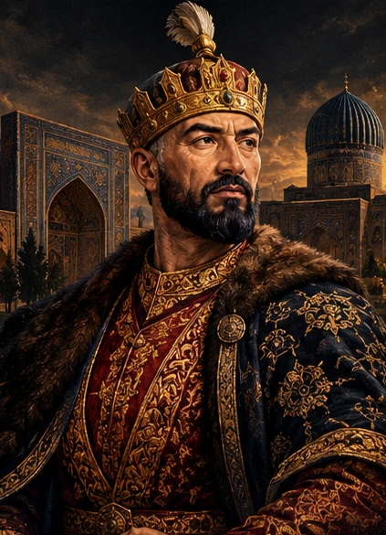
01 1336–1405SARKARDA · HUKMDOR
Amir Temur
Movarounnahrda markazlashgan davlat barpo etgan hukmdor va sarkarda.
Hayoti bilan tanishing ↗O‘TMISHNI ANGLA, KELAJAKNI YARAT
Yurtimiz tarixini o‘zgartirgan insonlar, ularning hayoti, kashfiyotlari va unutilmas merosini kashf eting.
TARIX SAHIFALARIDAN
Sarkardalar, olimlar, shoirlar, hukmdorlar va ma’rifatparvarlar bilan tanishing.

01 1336–1405SARKARDA · HUKMDOR
Movarounnahrda markazlashgan davlat barpo etgan hukmdor va sarkarda.
Hayoti bilan tanishing ↗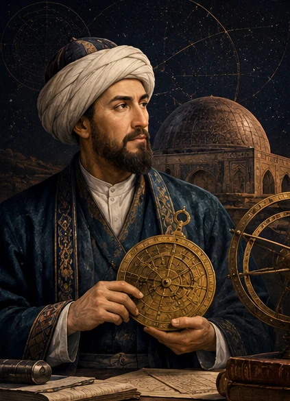
02 1394–1449OLIM · HUKMDOR
Astronomiya va matematika rivojiga katta hissa qo‘shgan temuriy hukmdor.
Hayoti bilan tanishing ↗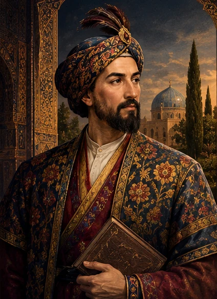
03 1441–1501SHOIR · MUTAFAKKIR
Turkiy adabiyotning buyuk namoyandasi va davlat arbobi.
Hayoti bilan tanishing ↗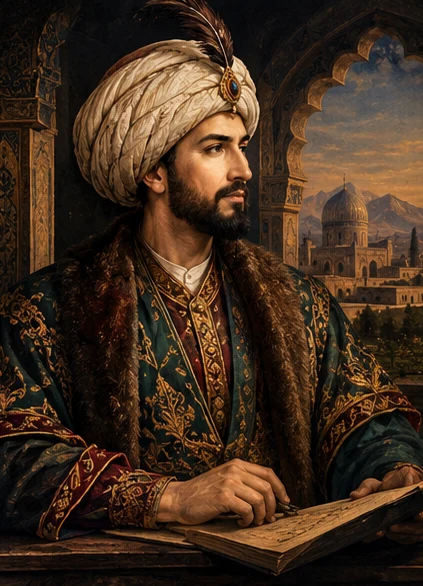
04 1483–1530HUKMDOR · SHOIR
Boburiylar saltanatiga asos solgan hukmdor va “Boburnoma” muallifi.
Hayoti bilan tanishing ↗OLIM · MATEMATIK
Algebra va hisoblash usullari tarixiga katta hissa qo‘shgan olim.
Hayoti bilan tanishing ↗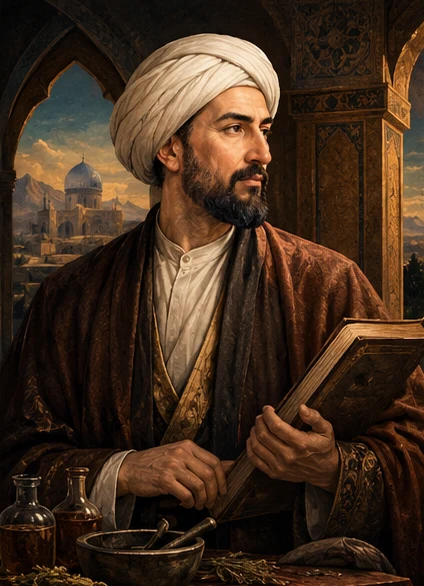
06 980–1037OLIM · TABIB · FAYLASUF
Tibbiyot va falsafa rivojiga ulkan hissa qo‘shgan alloma.
Hayoti bilan tanishing ↗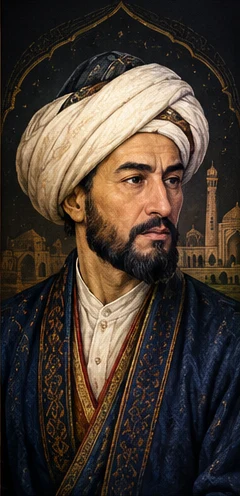
07 IX asrOLIM · ASTRONOM
Astronomiya bilimlarini tartibga solgan va keng tarqalishiga hissa qo‘shgan olim.
Hayoti bilan tanishing ↗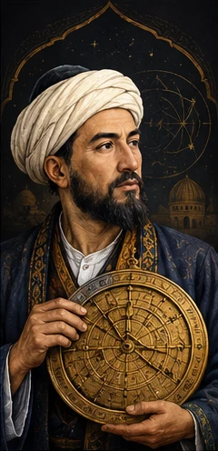
08 973–1048OLIM · QOMUSIY ALLOMA
Ko‘plab fanlarni tadqiq qilgan qomusiy olim va kuzatuvchi.
Hayoti bilan tanishing ↗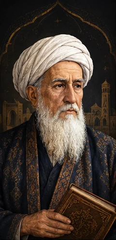
09 810–870MUHADDIS · OLIM
Hadis ilmining eng mashhur allomalaridan biri.
Hayoti bilan tanishing ↗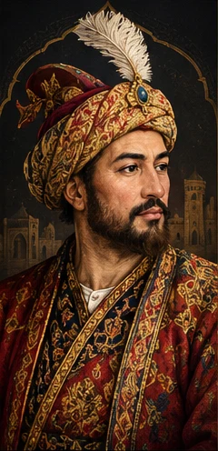
10 XI asrTILSHUNOS · OLIM
Turkiy tillar va xalqlar haqida qimmatli lug‘at yaratgan olim.
Hayoti bilan tanishing ↗ 11
1075–1144
11
1075–1144
TILSHUNOS · MUFASSIR
Arab tili grammatikasi va tafsir ilmi rivojiga hissa qo‘shgan xorazmlik olim.
Hayoti bilan tanishing ↗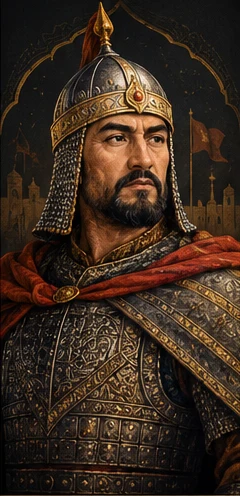
12 1198–1231HUKMDOR · SARKARDA
Xorazmshohlar davlatining so‘nggi hukmdori, mo‘g‘ullar istilosiga qarshi kurashgan sarkarda.
Hayoti bilan tanishing ↗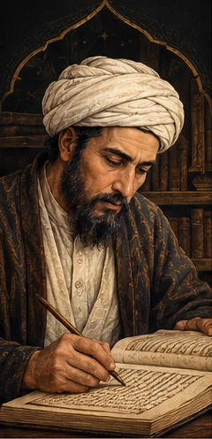
13 1377–1447HUKMDOR · TEMURIY
Temur vafotidan keyin temuriylar davlatini mustahkamlashga hissa qo‘shgan hukmdor.
Hayoti bilan tanishing ↗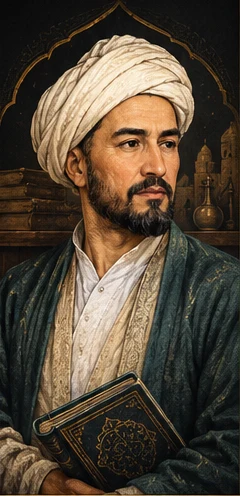
14 1438–1506HUKMDOR · MADANIYAT HOMIYSI
Hirotda adabiyot, san’at va ilm-fan rivojiga homiylik qilgan temuriy hukmdor.
Hayoti bilan tanishing ↗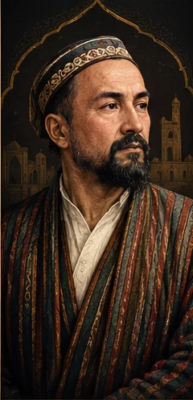
15 1809–1874SHOIR · TARIXCHI · TARJIMON
Xorazm adabiy muhitining yirik shoiri, tarixchisi va tarjimoni.
Hayoti bilan tanishing ↗YOZUVCHI · ROMANNAVIS
O‘zbek romanchiligining asoschilaridan biri.
Hayoti bilan tanishing ↗ADIB · OLIM · JADID
Jadidchilik harakatining yirik vakili, yozuvchi va ma’rifatparvar.
Hayoti bilan tanishing ↗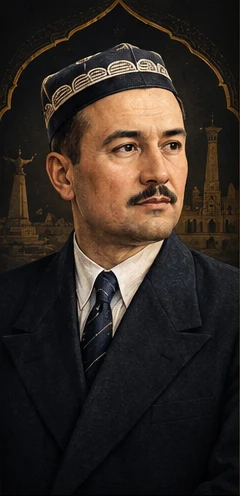
18 1897–1938SHOIR · YOZUVCHI · TARJIMON
XX asr o‘zbek adabiyotining yirik shoiri va yozuvchisi.
Hayoti bilan tanishing ↗Boshqa ism yoki toifani sinab ko‘ring.
Portretlar badiiy, sun’iy intellekt yordamida yaratilgan tasvirlardir; ular tarixiy shaxslarning haqiqiy yoki aniq portretlari sifatida qaralmasin. Sanalar va tafsilotlar ayrim manbalarda farq qilishi mumkin.
O‘tmishini bilgan xalq kelajagini yanada teranroq anglaydi.
— TARIX LOYIHASITARIXIY VIDEOLAR
Saytdagi 18 tarixiy shaxsning har biri haqida video qidirish va tomosha qilish uchun tanlang.
TARIXIY VIDEOLAR
Saytdagi 18 tarixiy shaxsning har biri haqida video qidirish va tomosha qilish uchun tanlang.
Amir Temur haqida hujjatli filmlar va tarixiy videolarni ko‘ring.
Mirzo Ulug‘bek haqida hujjatli filmlar va tarixiy videolarni ko‘ring.
Alisher Navoiy haqida hujjatli filmlar va tarixiy videolarni ko‘ring.
Zahiriddin Muhammad Bobur haqida hujjatli filmlar va tarixiy videolarni ko‘ring.
Muhammad al-Xorazmiy haqida hujjatli filmlar va tarixiy videolarni ko‘ring.
Abu Ali ibn Sino haqida hujjatli filmlar va tarixiy videolarni ko‘ring.
Ahmad al-Farg‘oniy haqida hujjatli filmlar va tarixiy videolarni ko‘ring.
Abu Rayhon Beruniy haqida hujjatli filmlar va tarixiy videolarni ko‘ring.
Imom al-Buxoriy haqida hujjatli filmlar va tarixiy videolarni ko‘ring.
Mahmud Koshg‘ariy haqida hujjatli filmlar va tarixiy videolarni ko‘ring.
Mahmud az-Zamaxshariy haqida hujjatli filmlar va tarixiy videolarni ko‘ring.
Jaloliddin Manguberdi haqida hujjatli filmlar va tarixiy videolarni ko‘ring.
Shohrux Mirzo haqida hujjatli filmlar va tarixiy videolarni ko‘ring.
Husayn Boyqaro haqida hujjatli filmlar va tarixiy videolarni ko‘ring.
Muhammad Rizo Ogahiy haqida hujjatli filmlar va tarixiy videolarni ko‘ring.
Abdulla Qodiriy haqida hujjatli filmlar va tarixiy videolarni ko‘ring.
Abdurauf Fitrat haqida hujjatli filmlar va tarixiy videolarni ko‘ring.
Cho‘lpon haqida hujjatli filmlar va tarixiy videolarni ko‘ring.
Videolar YouTube qidiruviga olib boradi. Qidiruv natijalaridan mos videoni tanlang. Videolar internet orqali ochiladi; ayrim videolarning aniqligi va manbasini tekshirib ko‘rish tavsiya etiladi.